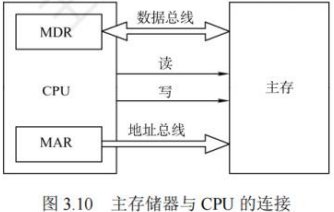
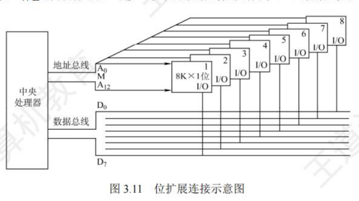
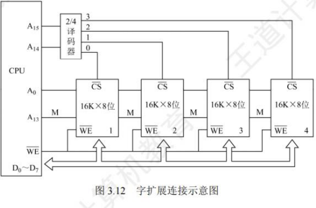
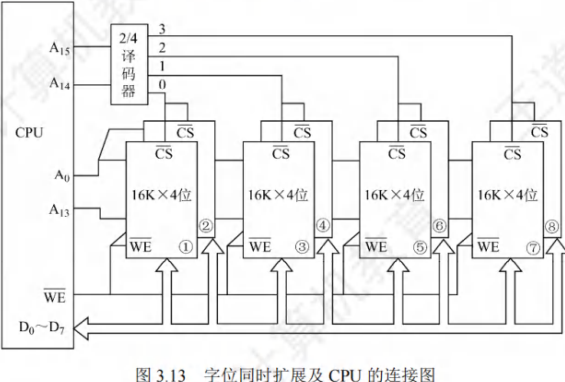

主存储器与CPU的连接
[toc]
连接原理
- 主存储器通过数据总线、地址总线和控制总线与CPU连接。
- 数据总线的位数与工作频率的乘积正比于数据传输速率。
- 地址总线的位数决定了可寻址的最大内存空间。
- 控制总线(读/写)指出总线周期的类型和本次输入/输出操作完成的时刻。
主存储器与CPU的连接如图3.10所示。

单个芯片的容量是有限的，因此通过存储器芯片扩展技术，将多个芯片集成在一个内存条上，然后由多个内存条及主板上的ROM芯片组成计算机所需的主存空间，再通过总线与CPU相连。
主存容量的扩展
由于单个存储芯片的容量是有限的，它在字数或字长方面与实际存储器的要求都有差距，因此需要在字和位两方面进行扩充才能满足实际存储器的容量要求。
位扩展法
位扩展是指对字长进行扩展(增加存储字长)。当CPU的系统数据线数多于存储芯片的数据位数时，必须对存储芯片扩位，使其数据位数与CPU的数据线数相等。
- 连接方式：各芯片的地址线、片选线和读/写控制线与系统总线相应并联；各芯片的数据线单独引出，分别连接系统数据线。各芯片同时工作。
- 示例：
- 如图3.11所示，用8片8K×1位的RAM芯片组成8K×8位的存储器。
- 8片RAM芯片的地址线、、都分别连在一起，每片的数据线依次作为CPU数据线的一位。

字扩展法
字扩展是指对存储字的数量进行扩展，而存储字的位数满足系统要求。系统数据线位数等于芯片数据线位数，系统地址线位数多于芯片地址线位数。
- 连接方式：各芯片的地址线与系统地址线的低位对应相连；芯片的数据线和读/写控制线与系统总线相应并联；由系统地址线的高位译码得到各芯片的片选信号。各芯片分时工作。
- 示例：
- 如图3.12所示，用4片16K×8位的RAM芯片组成64K×8位的存储器。
- 4片RAM芯片的数据线和都分别连在一起。
- 将用作片选信号，时，译码器输出端0有效，选中最左边1号芯片；
- 时，译码器输出端1有效，选中2号芯片，以此类推(同一时刻只能有一个芯片被选中)。
- 各芯片的地址分配如下：
- 第一片，最低地址：；最高地址：（16位）
- 第二片，最低地址：；最高地址：
- 第三片，最低地址：；最高地址：
- 第四片，最低地址：；最高地址：

字位同时扩展法
字位同时扩展是前两种扩展的组合，这种方式既增加存储字的数量，又增加存储字长。
- 连接方式：将进行位扩展的芯片作为一组，各组的连接方式与位扩展的相同；由系统地址线高位译码产生若干片选信号，分别接到各组芯片的片选信号。
- 示例：
- 如图3.13所示，用8片16K×4位的RAM芯片组成64K×8位的存储器。
- 每两片构成一组16K×8位的存储器(位扩展)，4组便构成64K×8位的存储器(字扩展)。
- 地址线经译码器得到4个片选信号，时，输出端0有效，选中第一组的芯片(1和2)；时，输出端1有效，选中第二组的芯片(3和4)，以此类推。

存储芯片的地址分配和片选
- CPU实现对存储单元的访问
- 首先要选择存储芯片，即进行片选；
- 然后在选定的芯片中选择具体的存储单元，以进行数据的读/写，即进行字选。
- 芯片内的字选通常是由CPU送出的条低位地址线完成（由片内存储容量决定）。
- 片选信号的产生方法分为线选法和译码片选法。
线选法
-
线选法用除片内寻址外的高位地址线直接连接至各个存储芯片的片选端，当某位地址线信息为“”时，就选中与之对应的存储芯片。
-
这些片选地址线每次寻址时只能有一位有效，不允许同时有多位有效，这样才能保证每次只选中一个芯片(或芯片组)。
-
假设4片位存储芯片采用线选法构成位存储器，各芯片的片选信号见表3.2，其中低位地址线作为字选线，用于片内寻址。
-
-
优点：不需要地址译码器，线路简单。
-
缺点：地址空间不连续，选片的地址线必须分时为低电平(否则不能工作)，不能充分利用系统的存储器空间，造成地址资源的浪费。
译码片选法
- 译码片选法用除片内寻址外的高位地址线通过地址译码器产生片选信号。
- 如用8片位的存储芯片组成位存储器(地址线为16位，数据线为8位)，需要8个片选信号；
- 若采用线选法，除去片内寻址的13位地址线，仅余高3位，不足以产生8个片选信号。
- 若采用译码片选法，即用一片74LS138作为地址译码器，高3位用于片选，则时选中第一片，时选中第二片，以此类推。
存储器与CPU的连接
合理选择存储芯片
- 要组成一个主存系统，选择存储芯片是第一步
- 主要指存储芯片的类型(RAM或ROM)和数量的选择。
- 通常选用ROM存放系统程序、标准子程序和各类常数，RAM则是为用户编程而设置的。
- 此外，在考虑芯片数量时，要尽量使连线简单、方便。
地址线的连接
- 存储芯片的容量不同，其地址线数也不同，而CPU的地址线数往往比存储芯片的地址线数要多。
- 通常将CPU地址线的低位与存储芯片的地址线相连，以选择芯片中的某一单元(字选)，这部分的译码是由芯片的片内逻辑完成的。
- 而CPU地址线的高位则在扩充存储芯片时使用，用来选择存储芯片(片选)，这部分译码由外接译码器逻辑完成。
- 例如，设CPU地址线为16位，即，位的存储芯片仅有10根地址线，此时可将CPU的低位地址与存储芯片的地址线相连。
数据线的连接
- CPU的数据线数与存储芯片的数据线数不一定相等，在相等时可直接相连；
- 在不等时必须对存储芯片扩位，使其数据位数与CPU的数据线数相等。
读/写命令线的连接
- CPU读/写命令线一般可直接与存储芯片的读/写控制端相连，通常高电平为读，低电平为写。
- 有些CPU的读/写命令线是分开的(读为，写为，均为低电平有效)，此时CPU的读命令线应与芯片的允许读控制端相连，而CPU的写命令线则应与芯片的允许写控制端相连。
片选线的连接
- 片选线的连接是CPU与存储芯片连接的关键。
- 存储器由许多存储芯片叠加而成，哪一片被选中完全取决于该存储芯片的片选控制端是否能接收到来自CPU的片选有效信号。
- 片选有效信号与CPU的访存控制信号 (低电平有效)有关，因为只有当CPU要求访存时，才要求选中存储芯片。若CPU访问，则为高，表示不要求存储器工作。